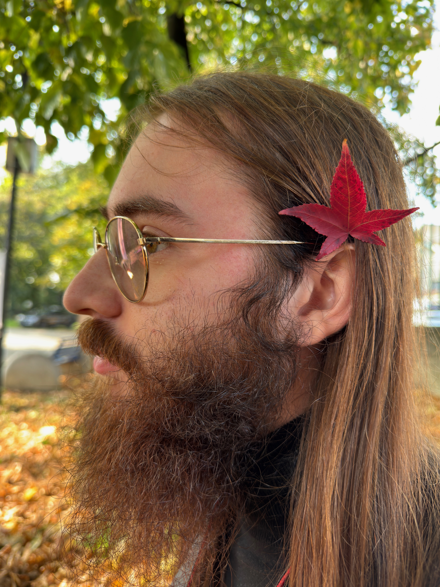
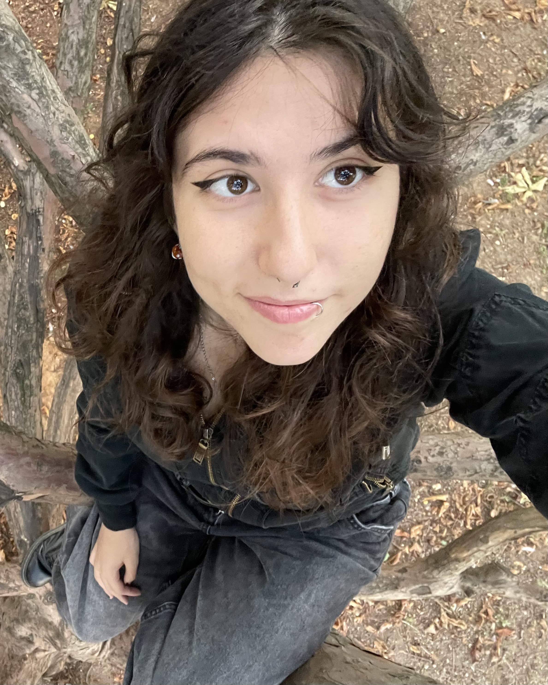
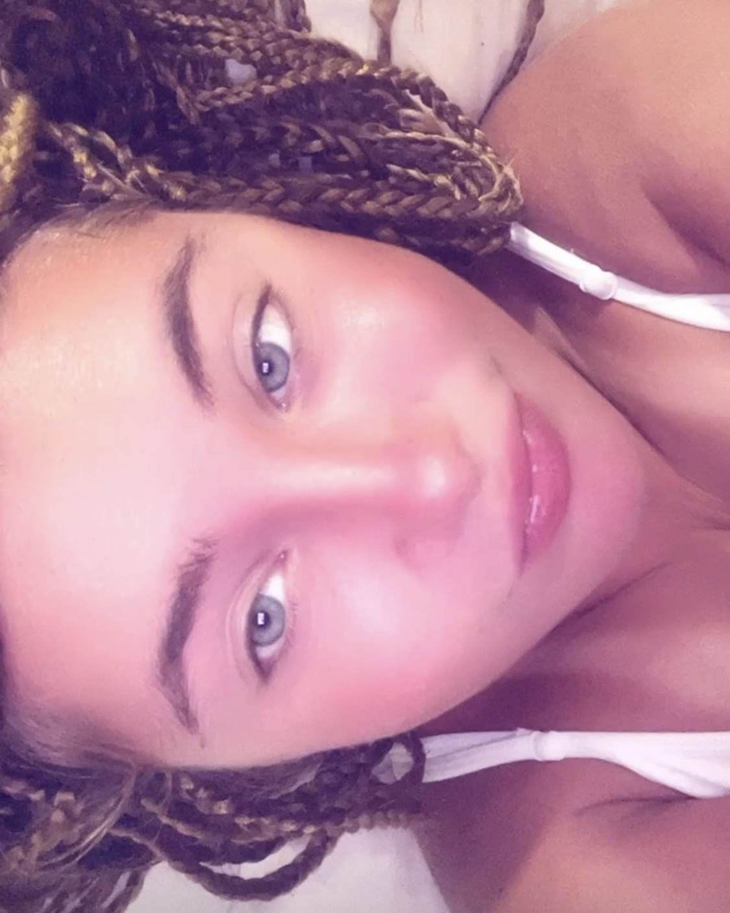

Chi siamo
Siamo Filippo, Victoria e Alessia, tre studenti di Fondazione Daimon, che durante il quinto anno hanno deciso di creare una piattaforma dedicata agli studenti appartenenti ai vari istituti saronnesi. Lo scopo della piattaforma è principalmente quello di creare una community coesa attraverso lo scambio di materiale scolastico, il tutoraggio e la diffusione di eventi pensati per i giovani.

Filippo Angaroni

Alessia Losacco

Victoria Cappelletti